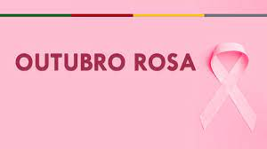

Outubro Rosa é uma campanha mundial que tem como objetivo aumentar a conscientização sobre o câncer de mama e promover a detecção precoce da doença. Durante este mês, diversas ações são realizadas para informar a população sobre a importância do autoexame, mamografias regulares e a necessidade de consultas médicas. A cor rosa, símbolo da luta contra o câncer de mama, é utilizada em diversas iniciativas, desde iluminações de prédios até eventos de arrecadação e divulgação de informações.
A detecção precoce é fundamental para o sucesso do tratamento do câncer de mama. Quando diagnosticado em estágios iniciais, as chances de cura são significativamente maiores. Por isso, é essencial que as mulheres conheçam seus corpos e fiquem atentas a alterações, como nódulos ou mudanças na aparência das mamas. Além disso, as mamografias, recomendadas a partir dos 40 anos, são um exame crucial para identificar possíveis lesões antes que se tornem mais graves.
O Outubro Rosa também destaca a importância do apoio emocional e psicológico para as mulheres diagnosticadas com câncer de mama. O impacto da doença vai além da saúde física; questões como a autoestima e o bem-estar mental são igualmente afetadas. Grupos de apoio, campanhas de sensibilização e histórias de superação são fundamentais para proporcionar um ambiente acolhedor e incentivar a luta contra o câncer, mostrando que é possível enfrentar a doença com coragem e esperança.
Por fim, a campanha do Outubro Rosa não se limita apenas às mulheres. É um chamado à ação para toda a sociedade, incluindo homens, familiares e amigos, para que estejam informados e apoiem aqueles que enfrentam a doença. Juntos, podemos contribuir para a mudança de mentalidade sobre o câncer de mama, quebrando tabus e promovendo uma cultura de cuidado e prevenção. A união de esforços é vital para que cada vez mais mulheres tenham acesso a informações e recursos que podem salvar vidas.
